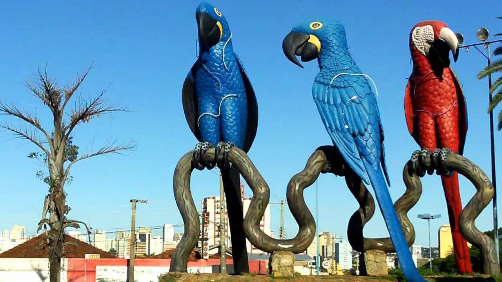
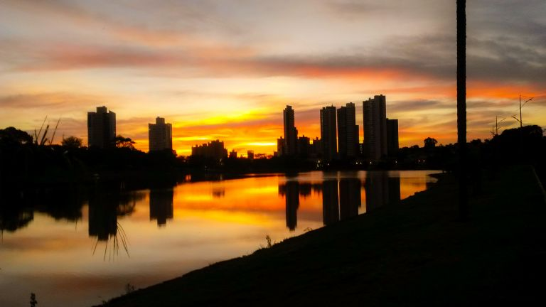

Campo Grande é um município brasileiro da região Centro-Oeste, capital do estado de Mato Grosso do Sul.É uma das cidades mais arborizadas do Brasil[11] sendo que 96,3% das casas contam com a sombra de um arvoredo.
Curiosidades da Cidade
Capital das Araras
A chegada das araras à Campo Grande começou a ser observada pela bióloga Neiva Guedes e equipe entre 1999 e 2000 e, agora ,mais de 20 anos, a cidade se torna capital das aves. O prefeito Marcos Trad (PSD), sancionou o projeto de lei que institui, também o Dia Municipal de Proteção das Araras. Neiva Guedes é também presidente do Instituto Arara Azul e explicou que as aves recolonizaram Campo Grande e a capital é hoje centro de reprodução de araras. A cidade tem mais de 300 ninhos cadastrados e ainda de acordo com a bióloga, os campo-grandenses ajudam a cuidar destas aves. “As pessoas gostam de ter as araras nos quintais e nas ruas. Então, todo mundo respeita e tem ajudado”.
Cidade Morena
Conhecida como Cidade Morena devido a terra avermelhada da região, que se intercala com paisagens típicas do cerrado brasileiro, Campo Grande destaca-se como a grande “porta de entrada” para quem deseja visitar o Pantanal, Bonito, a Serra da Bodoquena, o Parque Nacional das Emas, em Goiás, entre outros cartões-postais do Centro-Oeste.
Terere
É uma bebida típica de Campo Grande que é tomada gelada com água, sucos, hortelã ou limão. Sua origem é indígena, especificamente guarani e o nome "tereré" vem do ruído do ronco da guampa, quando a bebida está terminando. Em castelhano o correto é tererê, enquanto no Brasil o mais habitual é ser chamado de tereré. De origem paraguaia, o tereré chegou ao Brasil pela fronteira, pelos paraguaios e indígenas guaranis e kaiowás. As tradições do Tereré chegaram ao Brasil por Ponta Porã, cidade sul-mato-grossense que faz fronteira com a cidade paraguaia de Pedro Juan Caballero.